The Triple I Blog
Subscribe to Our Newsletter
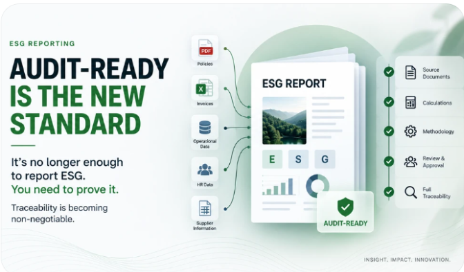
It’s no longer enough to report ESG. You need to be able to prove it.
Audit-Ready Is the New Standard
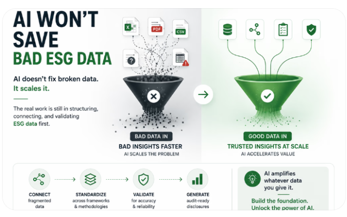
AI doesn’t solve bad ESG data, it amplifies it. Learn why connected, validated, and standardized sustainability data is essential before automation can deliver real value.
AI Won’t Save Bad ESG Data
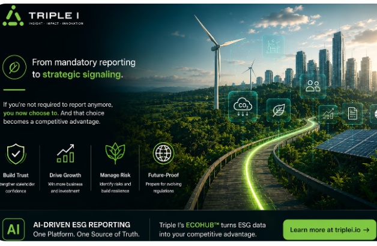
Why voluntary ESG reporting is becoming the next competitive advantage
The Real ESG Shift Nobody Talks About
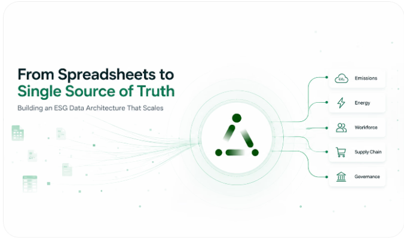
Most companies still run ESG on spreadsheets. Learn how to build a single source of truth, an audit-ready data architecture that scales as your reporting grows.
From Spreadsheets to Single Source of Truth: Building an ESG Data Architecture That Scales
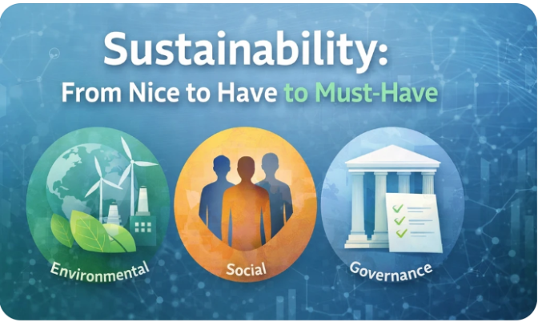
Understand how ESG evolved from a voluntary initiative into a regulatory and strategic necessity for modern businesses.
Sustainability: From Nice to Have to Must-Have
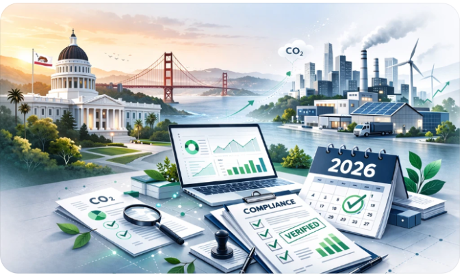
How to Prepare for California’s SB-253: Your Complete Compliance Guide by Triple I
California is leading a climate accountability revolution and 2026 is the year of change
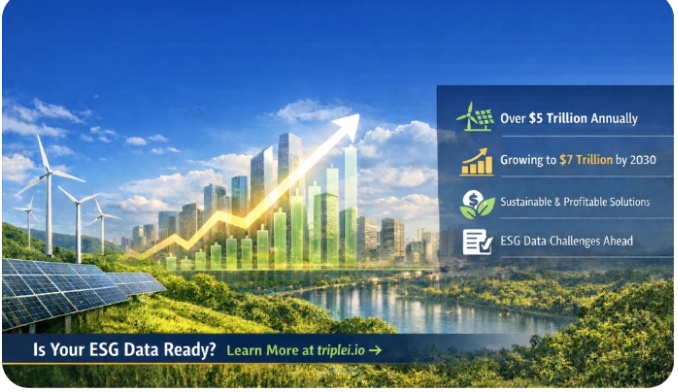
Sustainability isn’t just a buzzword, it’s now a $5T+ economy. Learn why ESG data is key to staying competitive and how Triple I simplifies ESG compliance and strategy.
The $5 Trillion Green Economy: Why ESG Data Is Now a Business Imperative
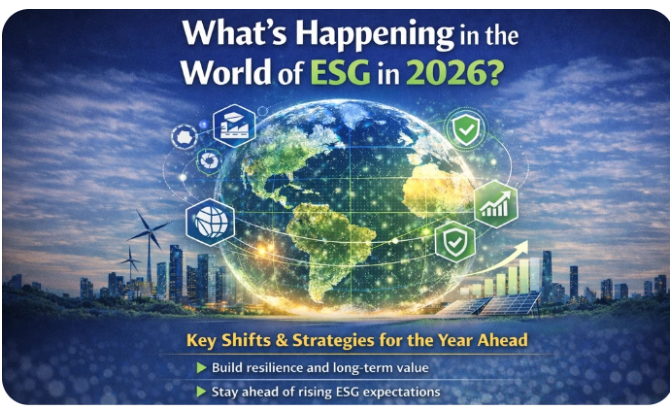
2026 will be a defining year for ESG. Read the 2026 ESG Outlook.
2026 ESG Outlook: What You Should Be Planning For
The Human Approach to Automated ESG Reporting
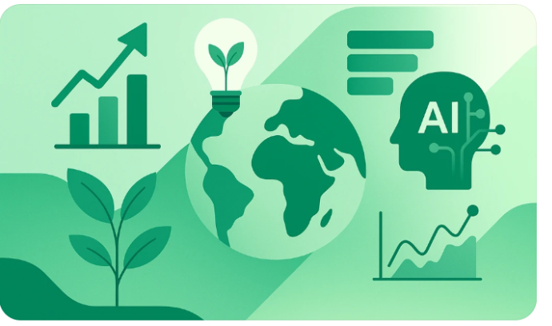
Five Trends That Shaped the Future of ESG Reporting and Sustainability Data Management in 2025
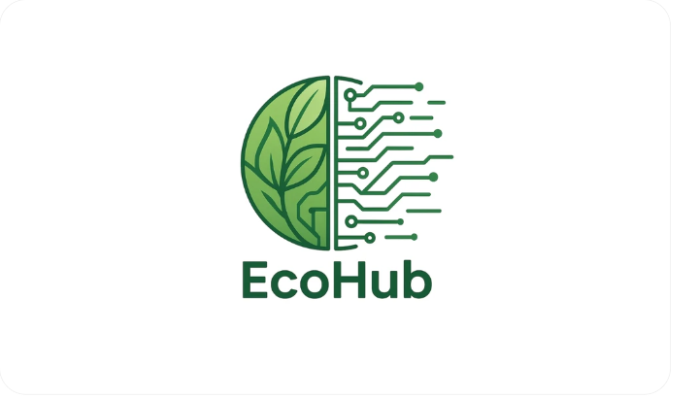
Triple I Launches EcoHub: A New Era of Automated ESG Reporting
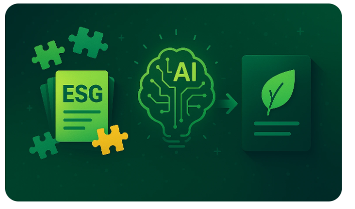
How AI Is Transforming ESG Reporting: Fragmentation to Clarity
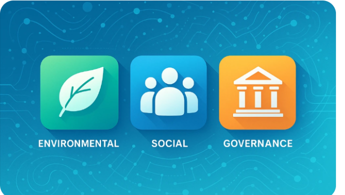